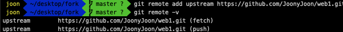

깃허브(GitHub)에서의 오픈 소스 프로젝트 기여를 위한 가이드라인
이번 글에서는 깃허브(Github)에서 오픈 소스 프로젝트에 기여하는
방법을 안내한다.
거창한 작업이 아니라도 괜찮다. 사소한 용기가 많은 사람들에게
유익한 결과를 안겨줄 수 있다.
1. 기여할 프로젝트를 선택하기
세상엔 정말 무수히 많은 오픈 소스 프로젝트들이 존재한다.
자칫하면 모래사장에서 바늘 찾는 일이 될 수 있으니, 나만의 선택
기준을 미리 생각해두어야 한다.
- 적어도 한 번 이상은 사용해 본 적이 있어야 한다.
- 사용자의 기여 활동이 활발한 프로젝트여야 한다.
- 마지막으로 커밋(Commit) 된 시기가 1년 이내인 프로젝트여야 한다.
- 처음부터 너무 거대한 프로젝트를 고르지 않는다.
무언가를 개선하려면 우선 그 대상을 잘 알아야 한다. 어느 정도의 사용 경험은 있어야 해당 프로젝트가 가진 이슈를 올바르게 파악할 수 있다. 경험 많은 기여자라면 저장소에 올라온 Issue 항목들 가운데 원하는 항목을 골라 작업할 수 있겠지만, 그렇지 않다면 일단 손에 익은 프로젝트부터 살펴보는 것이 낫다고 생각한다.
해당 프로젝트가 사용자의 참여를 독려하는 분위기인지, 모르는 사람의 이슈 제기나 기여 요청에도 적극적으로 응답하는지 알아야 한다. 해당 저장소의 Issue나 Pull Requests 목록을 살펴보면 대강의 분위기를 짐작할 수 있다.
만약 최근 1년 이내에 코드 커밋 기록이 없는 프로젝트라면 더 이상 유지보수가 이루어지지 않는 상황일 수 있다. 이런 프로젝트엔 애써서 기여 작업을 하더라도 반영되지 못할 가능성이 클 것이다.
대중적으로 유명한 프로젝트들은 대개 수십 명에 달하는 컨트리뷰터들의 손을 거쳐 많은 부분이 고도화 된 상태이기에 오픈된 이슈들의 맥락을 파악하거나 향후 업데이트 방향성을 알아보는 과정에 많은 노력이 들어간다. 기여 활동에 익숙해지기 전까지는 작은 프로젝트부터 선택해서 시작하는 것이 좋다고 생각한다.
초심자 입장에서 가장 신속하면서도 간편하게 오픈 소스 기여를 시작할 수 있는 방법은 바로 내가 현재 사용 중인 프로젝트내가 현재 사용 중인 프로젝트를 고르는 것이다. 해당 프로젝트를 직접 사용해 봤다면 개선이 필요한 부분도 빠르게 찾아낼 수 있고, 내가 개선한 작업의 효과를 내 환경에서 즉시 체감할 수 있기에 개인적인 효용감이 무척 크다.
2. 수행할 작업을 선택하기
기여할 프로젝트를 찾았다면, 다음으로는 어떤 기여 작업을 할 것인지 정해야 한다.
복잡한 코드 작업 만이 의미 있는 기여인 것은 아니다. 내 능력으로 할 수 있는 일을 찾아 가능한 만큼만 해내면 된다. 어떤 것이든 개선의 대상이 될 수 있다. 이미 많은 분들께서 강조하신 것처럼, 매뉴얼 문서나 코드 주석에 적힌 사소한 오탈자, 잘못되거나 존재하지 않는 번역을 고치는 것 또한 훌륭한 기여 작업이다. 때로는 위에서 소개한 일화처럼 간단히 수정 가능한 버그를 발견하여 고치는 작업도 가능할 것이다.
만약 해당 프로젝트의 어떤 부분부터 들여다 보아야 할지 막막하다면, 해당 프로젝트 저장소의 Issue 목록을 살펴보자. 프로젝트에 대한 질의응답이나 버그 제보, 개선 방안에 대한 논의가 이곳에서 이루어진다. 여기서 내가 기여할 수 있을 만한 항목을 찾아 댓글로 의견을 남기거나, 반대로 내가 개선 방안을 먼저 제시하는 것도 가능하다.
3. 본격적으로 도전하기
기여하고 싶은 대상과 기여의 방향이 모두 정해졌으니, 이제 본격적으로 작업을 시작해보자. 저장소 포크(Fork)부터 시작하여 작업용 브랜치(Branch) 생성, 작업 내용의 커밋(Commit)과 푸쉬(Push)를 거쳐 원본 저장소(Repository)에 대한 PR(Pull Request) 전송에 이르는 과정을 단계 별로 살펴볼 것이다.
깃허브에서의 작업은 기본적으로 여러 사람들이 원격으로 비동기적인 협업을 이어간다는 전제로 이루어진다. 따라서 작업 내용이 간단하더라도 따라야 할 절차의 단계가 조금 많은 편이다. 단계의 숫자가 많을 뿐이지, 실제로 해보면 크게 어렵지는 않으니 차근차근 진행해보자.
- 기여할 프로젝트 저장소를 포크(Fork)하기
- 포크(Fork)해 온 내 저장소를 최신화하기
- 내 저장소에 작업용 브랜치(Branch) 만들기
- 내 작업 내용을 내 저장소에 올리기
- 원본 프로젝트에 Pull Request 보내기
- Pull Request가 Merge된 것을 확인하기
가장 먼저 해야 할 일은, 기여하고자 하는 프로젝트의 원격 저장소(Repository)를 내 깃허브 계정으로 포크(Fork)하는 것이다. 여기서 포크(Fork)란, 다른 프로젝트의 저장소를 깃허브의 내 계정으로 복제해 오는 것을 의미한다.
PC에서 깃허브에 로그인 한 상태로, 내가 기여하고자 하는 프로젝트의 저장소 화면에서 상단 우측의 Fork 버튼을 눌러보자.
그러면 내 계정에 해당 프로젝트가 포크(Fork)되어 온 것을 확인할 수 있다. 이때 해당 저장소에는 forked from (원본 프로젝트명) 형태의 설명이 함께 따라붙는다. 이제 포크(Fork)된 저장소를 git clone (포크된 저장소 경로) 명령으로 내 로컬 환경에 복사하면 기초적인 작업 준비가 끝난 것이다.
왜 이런 작업이 필요할까? 깃허브로 관리되는 오픈 소스 프로젝트의 저장소는 대개 권한을 가진 일부 사용자에게만 직접 접근을 허용하는 편이다. 아무나 와서 이상한 코드로 프로젝트를 망가뜨린다면 곤란할테니까. 그래서 나의 작업 사항을 내 계정으로 포크(Fork)해 온 저장소에 우선 기록한 후, 내가 고친 내용이 원본 저장소에 반영되도록 요청(PR; Pull Request)하는 방식으로 일을 진행하는 것이다.
처음 포크(Fork)해온 시점에는 원본의 최신 코드가 그대로 반영되어 있겠지만, 기여 작업을 이어가다 보면 다른 누군가에 의해 변경된 코드가 원본 프로젝트에 새로 업데이트 되어 있을 수 있다. 포크(Fork)해온 저장소의 최신화는 그래서 중요하다. 시간이 걸리는 기여 작업이라면, 저장소 최신화에 반드시 신경쓰도록 하자.
위 명령문은 upstream이라는 이름으로 원본 프로젝트 저장소의 URL을 가리키는 새로운 원격 연결을 추가시키는 것이다. 이를 실행한 뒤 git remote -v 명령으로 현재 내 로컬 환경과 연결된 원격 저장소 경로들을 살펴본 결과는 다음과 같다
이제 내 저장소를 최신화시켜 보자. 아래의 명령들을 차례로 실행시켜 준다.
일부 문서의 오탈자 수정과 같은 작은 스케일의 작업이라면 원래 주어진 대로 main(또는 master) 브랜치에서 바로 작업해도 무방하다. 하지만 기능 개선이나 추가, 버그 수정 등의 작업이라면, 이것이 어떤 이슈를 해결하려는 작업인지 알아보기 쉽도록 별도의 브랜치로 분리하여 주는 것이 좋다.
내 경우에는 원본 프로젝트에 CSS를 추가하는 작업이었으므로, add-css라는 이름의 브랜치를 생성하여 관리했다.

이제 코드 작업을 시작하자. 위의 단계들을 거쳐 만든 내 저장소의 작업용 브랜치에 나의 작업 내용을 커밋(commit)하고 푸시(push)하도록 하자. 내 경우에는 작업 내용이 무척 단촐하여 단 하나의 커밋 만으로 마무리했다.
이제 내 작업용 저장소에 웹으로 접속해보면, 아래 스크린샷과 같이 Compare & pull request 버튼이 활성화된 것을 볼 수 있다.
위의 버튼을 누르면, 내가 처음 fork 해왔던 원본 프로젝트 저장소에 PR(Pull request)을 open 할 수 있는 화면이 나타난다.
여기에서 아래 스크린샷과 같이 PR을 보내려는 원본 프로젝트 저장소와 브랜치명, 그리고 수정사항이 담긴 내 저장소와 브랜치명을 각각 확인하고 지정해준다.
PR 내용이 최종적으로 잘 수용되어 원본 저장소에 merge 되었다면, 해당 PR 게시글의 하단에서 아래와 같은 반가운 메시지를 볼 수 있을 것이다.

이로써 내가 수정한 코드가 오픈 소스 프로젝트에 반영되었고, 해당 프로젝트의 기여자(Contributor) 목록에 이름을 올리게 되었다.
해당 PR이 공식적으로 Closed 처리 되었다면 안내 메시지에 따라 내 작업용 브랜치를 삭제할 수 있다. 더 이상 같은 프로젝트로 작업할 일이 없다면 fork해온 내 저장소 역시 삭제해도 좋다.
4. 이것만은 꼭 지키기
오픈 소스에 기여하는 작업도 결국 사람과 사람 간의 일이다. 작업물의 품질 못지 않게 중요한 것이 작업에 임하는 마음가짐이라고 생각한다.
기대와 다른 반응에 서운해하지 말자
모든 기여가 항상 열렬한 환영으로 이어지는 것은 아니다. 내가 공들여 올린 PR이 거절된 상태로 Closed될 수도 있고, 때로는 PR 자체가 Open된 채로 누구에게도 검토받지 못한 채 잊혀질 수도 있다.
내 노력이 반영되지 않았거나 무시 당했다고 해서 서운해하지 말자. 대개 오픈 소스 프로젝트들은 이렇다 할 대가 없이 선의로 움직이는 사람들에 의해 운영된다. 우리가 일상에서 접하는 많은 서비스들이 이러한 사람들로부터 유무형의 빚을 지고 있다는 점을 유념하자. 이런 세계에 기여하고자 한다면, 해당 프로젝트를 응원하고 후원하는 사람으로서 겸허한 마음으로 접근하는 것이 바람직하다고 생각한다.
정해진 규칙을 따르자
대개의 오픈 소스 프로젝트는 기여 희망자를 위한 규칙을 정해두고 있다. 이러한 규칙은 문서로 직접 명시된 경우도 있고, 때로는 코어 개발자나 메인테이너들에 의해 암묵적으로 지켜지는 경우도 있다. 원활한 기여 작업을 위해서는 해당 규칙을 잘 숙지하고 참여하는 것이 좋다. 예를 들어 어떤 프로젝트에서는 반드시 Issue를 먼저 등록한 후에 메인테이너 확인을 거쳐 PR을 Open해야 할 수도 있다.
아울러 Issue 또는 PR 메시지를 작성할 때 따라야 할 규격을 세세히 정해놓은 경우도 존재한다. 여럿이 함께 협업하는 원격 환경에서 원활한 커뮤니케이션을 위해 지켜야 할 규칙으로 이해하고 받아들이는 것이 좋다.
PR 게시물 작성에는 언제나 신중하자
PR(Pull Request)은 결국 나의 작업을 프로젝트 원본 저장소에 반영해달라는 요청과 같다. 따라서 기여자에게는 해당 작업이 그 프로젝트에 매끄럽게 수용될 수 있도록 PR 내용을 충실히 작성해야 할 의무가 있다.
앞서 소개했던 것처럼, 나는 PR 게시물에서 버그 재현의 환경 조건을 제대로 명시하지 않았다가 예기치 못한 혼란을 만들었다. 코어 개발자의 너그러운 양해 덕분에 문제 없이 잘 넘어갔지만, 여러 명이 빠듯하게 작업 중인 프로젝트에서는 이런 실수가 큰 커뮤니케이션 비용으로 이어질 수 있다. PR 게시물은 언제나 신중한 자세로, 예의 바르게 작성해야 한다.